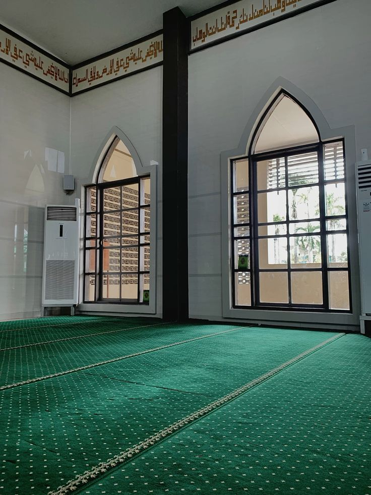

"Hanya yang memakmurkan masjid-masjid Allah ialah orang-orang yang beriman kepada Allah dan Hari kemudian, serta tetap mendirikan shalat, menunaikan zakat dan tidak takut (kepada siapapun) selain kepada Allah."
Surah At-Taubah, 9 : 18
Lokasi Masjid di Peta
Jl. Lingkar Salatiga, Blotongan, Kec. Sidorejo, Kota Salatiga, Jawa Tengah
Fasilitas Masjid

Ruang Sholat Utama
Nyaman, ber-AC, dengan kapasitas jamaah yang luas.